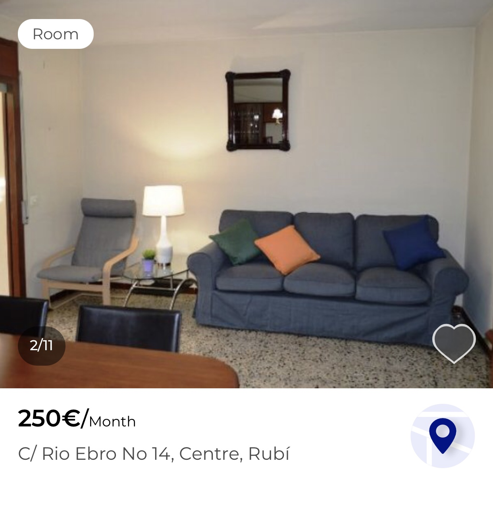

Living in Barcelona
旅行前の準備って楽しいですよね。
どっか海外行こうや！ この一言から始まって、どこに行くかを家族や友達、もしくは1人で決める。
どこに泊まるか値段と相談しながらairbnb、booking.comを調べる。
なるべく楽で安いフライトを探す。人によってはお気に入りの航空会社を使える楽しみもある。
目的地を想像しながら着る服や靴を考えたりもする。
Bring a suitcase and pack your stuff

Preparation for Study Abroad to Spain
スペイン留学準備
スペイン留学準備で大変なことは、書類の多さでも、審査の厳しさでもありません。
スペイン人の仕事の遅さです。
このような書き方は差別的だと指摘を受けるかもしれないので、語弊が無いように言っておくと
日本人の時間厳守への概念とスペイン人の時間厳守への概念が違うということです。
そもそも昼寝の時間が国家単位で取り入れられてる国と時間の感覚が一緒なわけないですよね笑
極端な話、向こうの人はあなたが期限に追われているとか気にしません。
時間には余裕を持って準備して下さい。
Get a VISA
ビザ取得
まずビザの取得について話していきます。必要な物はめっちゃシンプルです。留学先大学からの入学許可書、住む家の住所。この2つです。
なんでこの2つに時間かかんねんてなりますよね。僕もなりました笑
入学許可書は、日本の大学からの推薦状や許可書とIELTSなどの成績を提出して結果を待ちます。
この入学許可書が届くのに3週間かかりました。家探しもしないといけないのに、入学許可がおりないことには何もできませんでした。
初めは大学の寮に住む予定で手続きをしていましが、許可が出ないことには部屋の予約ができないと大学から言われていました。
何でその連絡だけすぐ来て、許可が来んねんて話ですよ笑 どうでもいいメールはすぐに帰ってくるんですよね。
何とか家が決まって、ビザを取得できました。家探しは次で説明します。
一点、パスポートについて注意点です！！
留学先に滞在中に期限が切れるパスポートは事前に更新しておいて下さい！大使館からビザが発行できないと警告されました。
僕は滞在中に期限が切れてしまうので、更新するしかなかったです。その更新にも時間がかかるので、ビザ取得が出国の1週間前になりました。
Finding a house
家探し
上でも書いてたように最初は大学の寮に住む予定で手続きをしてました。でも、寮は早い者勝ちの予約制でした。
留学先に予約さしてと言っても入学許可書が無かったら、誰か分からないからできないよと言われました。
んじゃ早く許可書送ってと言えば、急に返信が来なくなる。この繰り返しでした笑 人のこと完全に舐めてますね笑
ちなみに寮にも部屋のタイプが何個かあって、それぞれで値段設定も違いました。
完全に1人部屋（トイレ・シャワーは個別）、2人でシャワー・トイレをシャア（1人1部屋）、4人で全てをシェア（部屋、シャワー、トイレ）。
最後の部屋タイプに関しては完全プライベート無しですよ笑 ずっとゲストハウス泊まってる感じです。
なので、どうしても良い部屋を予約したかったんです。でも許可書が全く送られて来なかったので、できませんでした。
それどころか寮が受け入れ人数超えたので違うとこ探して下さい。って言われました笑 どうしたらええの？笑
それは無責任すぎるやろってことで家探しのサイトを紹介してもらって、そこで物件を新たに探すところから始まりました。
住む場所が決まらないと、ビザが貰えないので焦ってしかなかったです。
紹介してもらったサイトで色々物件を見ていくんですが、住む場所、料金、部屋の綺麗さとかの選択肢が増えたので余計時間かかりました。

上の写真が紹介されたサイトの内容例です。日本で物件探す時と同じような感じで探しました。
左写真のハウスルールに当てはまるか確認して、立地、値段が納得行ったら、ハウスオーナーにメールで入居できるか確認します。
問題はここからです。オーナーはスペイン語しか分からなかったので、全てスペイン語かカタラン語で返信が来ました。
それ以上に、サイト上に記載されてるハウスルールとオーナーが言ってることが違うんです。
写真の物件なら最低5ヶ月、最長5ヶ月。デポジットは1ヶ月分。カップルOKなどが記載されてます。
でも実際には、1年以上ジャないとダメ、デポジットは3ヶ月分、家族でしか入居できない、女性専用のアパートなど
記載内容と違うこと、記載されてない条件も出されて全く住む家が決まりませんでした。今思い返せば笑い話ですけど、
当時はストレス溜まりまくってました笑 早く物件を決めないとビザを取れないし、バルセロナに行っても家が決まるまでホテル暮らしでした。
運よく見つかったのが、Lessepsにあるあの物件でした。今思えば、究極の穴場物件です。
友達の家に遊びにいく時もありましたけど、バルセロナで大きい窓付きの部屋を探すのは難しいそうです。
中心地であるPlaca Catalunyaまでは5駅。歩いても行ける距離です。海へも電車で5駅。近所にはお洒落なカフェ、バーがありました。
家探しはこんな感じです。メールが返ってこない、予想外のことが起こる事を前提に準備した方がいいと思います。
Course registration
履修登録
履修登録もすごかったですよ。結論から書いてしまいますけど、履修登録したクラス全部が開講されないクラスだったんです笑
家探しとビザ取得の準備と並行しながら、履修登録をしてました。無駄に長く英語で書かれた履修要項を読んで、
日本の大学の授業と単位交換できるか考えて、教授と相談しながら決めてました。ここで困ったのがヨーロッパと日本の単位の数え方です。
ヨーロッパはECTAかETCAという単位で数えます。（どっちか忘れました。）これは日本の単位の半分しかないという意味の分からない制度でした。
これに関してはどっちが悪いとかないですけど、生徒側からしたらいい迷惑です笑 予想取得単位を計算して、単位交換できる授業を選んで
留学先大学に提出しました。履修登録が完了したというメールも貰って、バルセロナに着いて、留学生用のオリエンテーションに出た時に、
このリストに載ってる学部の授業は今年開講されませんと知らされました。いや、おかしいやん笑 大学始まんの明後日やで。
あと2日間で履修登録し直しです。最悪だったのが、再履修登録しようとしても、履修登録期間過ぎてるから受講できないよと言われました。
その瞬間だけは、この人種嫌いやと思いました。これに関しては許して欲しいです笑
受講したいクラスの教授を調べて直談判して何とか受講できるようになりました。教授は優しい人ばかりだったので良かったですが、
事務のおばちゃんがめちゃめちゃでした。この教授の部屋どこ？って聞いても、分からん。しか言いません。
なんで学部内の教授のオフィスを知らんねん笑 留学生用の窓口なのに英語を話せないスタッフもいました。何でそこおるん？笑
最後は愚痴みたいになっちゃいましたが、こんな事が起こるのも珍しくないと思っておいた方が良いかもしれないです。
Summary
まとめ
こんな感じで留学生活よりも留学を始める準備の方が大変なんじゃないかと感じることもありました。
もう２度としたくないですけど、経験できて良かったと思ってます。
バルセロナへの留学はめちゃめちゃ楽しいですが、そのための準備は予想以上に厳しいです。
留学前からカルチャーショックをもろに受けます。経験者としてアドバイスを送るとすれば、
最悪を想定して、早めに行動するのがベストです。
私の経験が、少しでも皆さんの助けになれば幸いです。一緒に頑張りましょう。
質問があれば、何でも聞いて下さい！